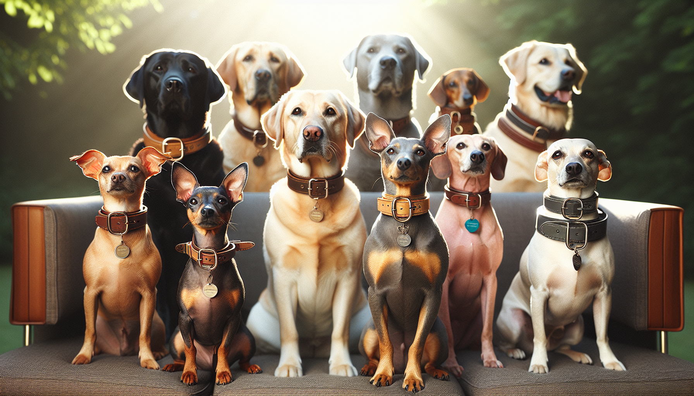

Choosing a dog collar sounds simple at first, but any pet parent knows there is a lot more to it than picking a cute color off the shelf. The right collar should fit your dog comfortably, support their lifestyle, match their breed needs, and add a little personality too. Whether you are bringing home a new puppy, upgrading your current setup, or shopping for a thoughtful gift for a dog lover, finding the perfect collar can make everyday walks safer and more enjoyable.
Different breeds have different body shapes, coat types, energy levels, and sensitivities. A collar that works beautifully for a stocky Bulldog may not be the best option for a sleek Greyhound or a tiny Yorkie. In this guide, we will walk through how to choose the right dog collar for your breed, what features matter most, and how to make sure your pup looks and feels their best.
One of the biggest factors in choosing a collar is your dog’s physical build. Breed gives you helpful clues about neck size, head shape, pulling strength, and comfort needs. For example, broad-necked breeds like Boxers, Bulldogs, and Mastiffs often need wider collars that distribute pressure more evenly. Slender breeds such as Whippets and Greyhounds benefit from collars designed specifically for narrow heads and delicate necks.
Small breeds like Chihuahuas, Maltese, and Toy Poodles usually do best with lightweight collars that do not feel bulky or heavy. Large active breeds like Labradors, German Shepherds, and Golden Retrievers often need durable materials and secure hardware that can handle daily wear.
Here are a few breed-related collar considerations:
When in doubt, think beyond breed labels and focus on your dog’s actual anatomy. Neck width, coat thickness, and head shape matter just as much as breed category.
No matter how stylish a collar looks, it will not work well if it does not fit properly. A collar that is too tight can cause irritation, chafing, and discomfort. A collar that is too loose can slip off, especially in dogs with narrow heads or fluffy coats.
The classic rule is the two-finger test: you should be able to fit two fingers comfortably between the collar and your dog’s neck. This gives enough room for comfort without making the collar insecure. Puppies and growing dogs should be checked often, since they can outgrow a collar faster than many owners expect.
When measuring for a dog collar:
A well-fitted collar should stay in place, feel comfortable during movement, and never leave marks on the skin. If your dog scratches at it constantly or seems hesitant to wear it, fit may be the issue.
Material plays a major role in durability, comfort, and appearance. The best dog collar for your breed also depends on how your dog spends their time. Is your pup a muddy trail explorer, a gentle homebody, or the stylish star of every neighborhood walk?
Common collar materials include:
If your dog has sensitive skin or allergies, soft padded collars can help reduce irritation. If your dog has long fur, smooth materials with finished edges are less likely to snag hair. For strong pullers or highly active breeds, choose hardware that feels solid and reliable, not flimsy or decorative-only.
Also consider maintenance. Some collars are easy to wipe clean, while others need more care to keep them looking nice. Busy pet parents often appreciate collars that combine style with practicality.
Different collar styles serve different purposes. The right choice depends on whether your dog is calm on leash, still learning, prone to slipping out, or simply wearing a collar for ID purposes at home.
Popular dog collar types include:
For many dogs, a standard flat collar works perfectly for daily wear. However, if your dog pulls hard, has respiratory concerns, or is still in training, a harness may be better for walking while the collar holds tags and serves as a backup. Brachycephalic breeds like Pugs and French Bulldogs often benefit from less neck pressure during walks.
It is always worth thinking about your dog’s routine. A couch-loving senior dog may need softness and simplicity, while an energetic young Border Collie may need more durability and security.
Your dog’s coat can affect how a collar fits and feels more than you might expect. Thick-coated breeds like Huskies, Samoyeds, and Bernese Mountain Dogs may need slightly roomier sizing and collars that do not disappear into all that fluff. Meanwhile, short-haired breeds like Beagles, Dobermans, and Pit Bulls may be more prone to rubbing if the material is rough.
Comfort details to look for include:
If your dog has had skin irritation before, inspect the neck area regularly. Redness, hair loss, or rubbing can signal that the collar material or fit needs adjusting. Some dogs also do better when they have a dedicated everyday collar and a separate sturdier setup for outdoor activities.
For fluffy breeds, personalized collars can be especially helpful because engraved or embroidered details reduce the need for multiple dangling tags hidden under thick fur.
A dog collar should do more than look adorable. It should help keep your dog safe. One of the easiest ways to improve safety is by choosing a collar with clear identification. Personalized collars are a favorite among pet owners for good reason. They can include your dog’s name and your phone number right on the collar, making identification easy if your pup ever gets loose.
Helpful safety features include:
Personalization also adds charm. For gift shoppers, a custom dog collar feels extra thoughtful and unique. It turns an everyday essential into something memorable, stylish, and practical. This is especially appealing for birthdays, gotcha days, holidays, or new puppy gifts.
At SnoutAndAbout, personalized pet products add that special touch pet lovers adore, combining function with personality in a way that feels made just for their furry friend.
Let’s be honest: style matters too. Your dog’s collar is one of the accessories they wear most often, so it should reflect their personality and your taste. Maybe your pup is sporty, elegant, playful, outdoorsy, or a little bit spoiled in the best way. The good news is you do not have to choose between looks and function.
When picking a stylish collar, think about:
A rich leather collar can look beautiful on a large breed, while bright prints and soft fabrics may suit smaller or more playful pups. Personalized details can make the collar feel even more polished. The key is making sure the collar still meets your dog’s comfort and safety needs first.
For gift buyers, this balance is especially important. A beautiful personalized collar makes a practical gift that still feels heartfelt and fun.
When it comes to choosing the right dog collar for your breed, there is no one-size-fits-all answer. The best collar depends on your dog’s size, shape, coat, behavior, activity level, and personality. Start with proper fit, choose a material that suits your lifestyle, and look for safety features that give you peace of mind. Then add the style and personalization that make it feel uniquely theirs.
A great collar should help your dog feel comfortable, secure, and ready for whatever the day brings, from neighborhood walks to weekend adventures and cozy family photos. And if you are shopping for a fellow dog lover, a personalized collar is a thoughtful gift that combines usefulness with charm.
If you are ready to find something special for your pup, shop personalized pet products at SnoutAndAbout on Etsy and discover collars and accessories made to celebrate every wag, walk, and wonderful dog personality.